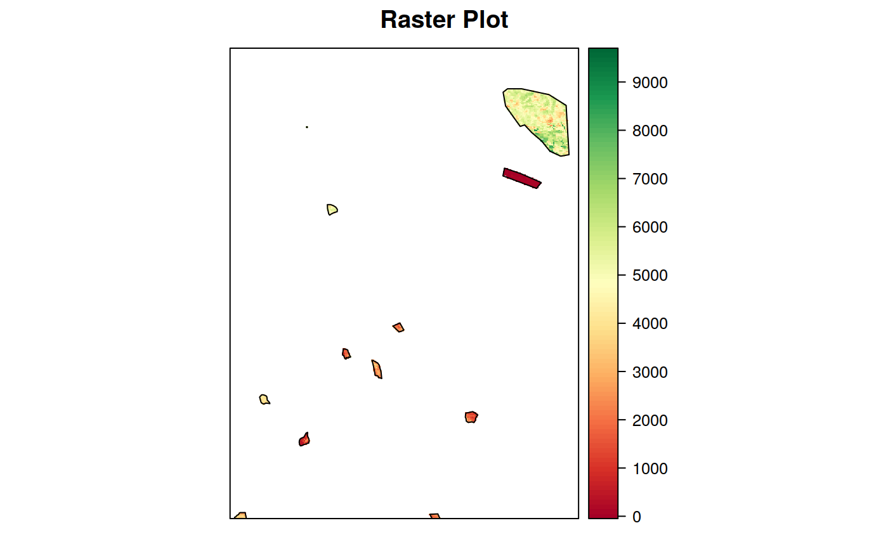

Masks a raster file or object on the basis of a vector file or object.
Pixels not covered by the vector features are set to NoData. If the input raster
is multi-band, the mask is automatically applied to all bands. An optional
buffer can be applied to the input vector to allow a more "lenient" masking,
or to remove also the borders of the vector.
mask_rast(in_rast, mask, mask_value = 0, crop = FALSE, buffer = NULL,
out_type = "rastobject", out_file = NULL, out_dtype = NULL,
out_nodata = NULL, compress = "None", overwrite = FALSE,
parallel = FALSE, cores = parallel::detectCores() - 2,
verbose = TRUE)
Arguments
| in_rast |
Raster file or object inheriting class raster to be masked |
| mask |
Vector file or object of class *sf or sp to be used as a mask
2. Raster file or object of class *sf or sp to be used as a mask
NOTE: If mask is a raster object or file, the function checks if it has the
same number of pixels and extent of in_rast. If this is true, then mask
is used directly to mask the input. Otherwise, it is first of all vectorized
to a vector mask. The vector mask is then used in the processing. |
| mask_value |
integer if mask is a raster object/file, value corresponding
to the areas that should be removed from the ouptut, Default: 0 (Ignored if
the provided mask is a vector!)
|
| crop |
logical if TRUE, in_rast is also cropped on the extent of mask,
Default: FALSE
|
| buffer |
numeric if not NULL, width of a buffer to be applied to mask
before masking in_rast. If negative, mask is "reduced" prior to masking
(see examples), Default: NULL
|
| out_type |
character
if == "rastobj", return a Raster object; if == "filename", return the filename of the masked layer (GTiff or gdal vrt format
depending on other arguments - see below)
Default: "rastobj" (If an invalid string is provided, defaults to rastobj) |
| out_file |
character filename where the masked raster should be saved
If NULL, the masked raster is saved on a temporary file in the R temporary
folder, named <basename(in_rast)>_sprawlmask.tif. The file is saved in GTiff
format, with compress compression.
|
| out_dtype |
character data type of the output masked files, according
to gdal specifications for GTiff files ("Byte", "UInt16", "Int16", "UInt32",
"Int32", "Float32", "Float64", "CInt16", "CInt32", "CFloat32" and "CFloat64").
If NULL, the data type is retrieved from the input, Default: NULL
|
| out_nodata |
numeric value to be assigned to areas outside the mask,
Default: NULL
|
| compress |
logical allow verbose output from foreach for debugging
purposes, Default: FALSE
|
| overwrite |
logical if TRUE, and out_file is set and existing,
existing files are overwritten, Default: FALSE
|
| parallel |
logical if TRUE, use ClusterR to implement multicore
processing. This speeds up execution for large rasters, Default: FALSE
|
| cores |
numeric Number of cores to use in case of parallel processing.
If not provided, it defaults to parallel::detectCores()-2
|
| verbose |
logical if TRUE, extended processing information is sent to
the console in the form of messages
|
Value
object of class raster (if out_type == rastobj), or character
string corresponding to the filename of the created raster (if out_type ==
rastfile)
Examples
